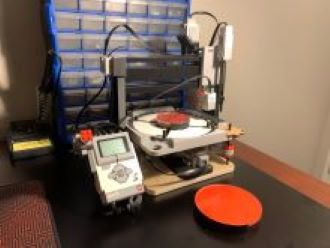

At MetaCycler a bioreactor was often use to complete certain tasks. However during these tasks foam was being created unprecedently forcing employees to have to cancel the bioreactor runs.
To solve this problem the team asked me and my colleague to create a dispensing mechanism that would allow us to add anti-foam solution periodically.
After going through multiple itterations including a double valve system, a singular valve systems both using washer for insulation we decided to use a perastaltic pump. We found that the previous dispensing mechanisms leaked a lot because there were little gaps given that 3D printing does not have perfect accuracy and the washer had 0 to no impact on insulation. The pump can be submerged, reduces need of sterylization and is easily housed and compatible with arduino.
We used an arduino, a motor drive and a 12V power source for the electronics of the project. This allowed to create a live feedback of the pumps behaviour and control its frequency of dispensing the liquid. By creating its own network we created a small page that can be visit while connected to the arduino to evaluate how many mililiters have been dispensed, the running time and more.
Here is a video demonstrating the pump in action and the page that keeps track of certain behaviours of the pump as it was important to do so for the company data management.